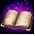
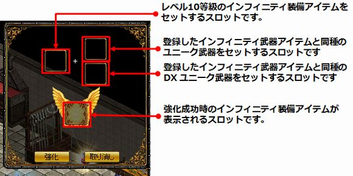
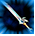
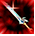
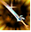
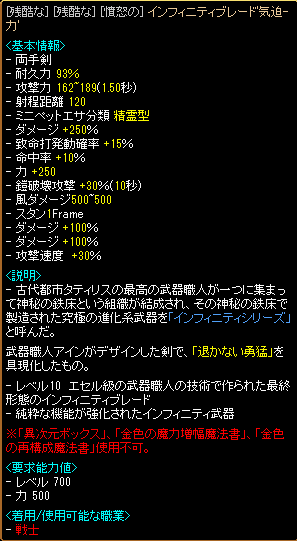

Eternal Weapon ULT
Eternal weapon strengthening system that can further strengthen Eternal Weapon 10 and equip it with Eternal Weapon ULT Status.Eternal Weapon ULT
| Enhancement related items | Steps to get it | |
|---|---|---|
| Mysterious training diary | It can be dropped rarely when hunting monsters within the range of the character by 100 levels |
|
|  | Unique training secret book |
Non- tradeable item Eternal Weapon ULT Unique recipe needed to strengthen. Can obtain the mysterious training diary by talking to the ancient city of Brunnenstig Weapon Craftsman Shana (98.53) or the Adventurers Association Brunnenstig Headquarters Weapon Craftsman Shery (64.21) and accept the quest "Give back the Weapon Craftsman" as a quest reward. Can be acquired. |
You will need to defeat 2000 magic inks and 300 Lv-50 monsters in the "Weapon Craftsman's Giving Back" quest.
To enhance Eternal Weapon 10 and Eternal Weapon 10 [Nx] using the Unique Forge Secret Book, you need 1 DX Unique and 1 Unique of the same type of weapon.
Example) To enhance Infinity Sword'Courage'(Eternal Weapon 10), also use DX Unique One-Handed Sword and Unique One-Handed Sword

Even if Eternal Weapon 10 [Nx] is strengthened, it does not become Eternal Weapon ULT [Nx], but becomes Eternal Weapon ULT.
If the upgrade fails, Eternal Weapon 10 will be retained, but DX Unique and Unique Items will disappear.
All option blackfire equipment enhancement options, successful or unsuccessful, will be removed.
Enhance with a unique recipe to become one of the three types of Eternal Weapon ULT.
Only Eternal Weapon ULT with enhanced weapon damage and option numbers can only be cultivated.
Only Infinity ULT with both enhancements can use "Different Dimension Box" and "Gold Enchantment Document".
"Golden Magic Amplification Spellbook" and "Golden Reconstruction Spellbook" cannot be used.
(* Because gold amplification and gold reconstruction are Korean information, verification is required)
| Eternal Weapon ULT type | |
|---|---|
|  | Eternal Weapon ULT with increased weapon damage by about 30% |
|  | Eternal Weapon ULT with option numbers increased by about 30% |
|  | Eternal Weapon ULT with both weapon damage and option numbers increased by about 24% |
Eternal Weapon ULT sample
Since it is treated as ULT equipment, the equipment request Lv calculation is performed by ULT equipment calculation.
Eternal Weapon ULT List
Note: Mirror spellbooks cannot be used here.Squire / Warrior
Lancer / Archer
Wizard / Werewolf
Priest / Fallen Angel
Tamer / Summoner
Monk / Thief
Princess / Little Witch
Necromancer / Demon
Spiritualist / Champion
Opticalist / Beastman
Maid / Demon Sorceress
Musketeer / Alchemist
計算の方法：属性攻撃など特殊なOP以外を各条件に従って掛け算して、小数点以下を切捨。
解放OPは1解放目以外IF10とほぼ同じです。
説明文は同じ文面が何度も並ぶのを回避するために割愛。IF10に以下の文章が付与されます。
* ベース強化(赤)：純粋な機能が強化されたインフィニティ武器
* オプション強化(青)：効果が強化されたインフィニティ武器
* 両方強化(黄)：全ての機能が強化されたインフィニティ武器
[参考]ユニークレシピ(公式サイト)